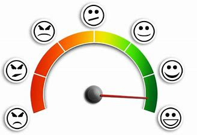

I am a coding and problem solving enthusiast. I love developing Python / Deep Learning projects and front-end of websites.
I have worked on many projects which allowed me to expand my data toolset and knowledge.
I have a passion for learning and sharing my knowledge with others.
Currently I am working as a Technical content writer Intern at Geeks For Geeks. I write about things I am familiar with and the things I am learning.
Have a look at my projects
Speech signal for emotion detection
It is used for emotion recognition from speech signal by extracting
Mel-spectrogram features. The model comprises of consvolution neuural networks, Long short term memory (LSTM)
and Attention layers. The dataset used is IEMOCAP which contains 5 sessions, and each session is displayed by
a pair of speakers (female and male).
Smart City
Smart Cities focus on the most pressing needs and on the greatest opportunities to improve lives of the people.
The objective is to provide decent quality of life to its citizen by enhancing small business and
tourism. It is a website built using HTML, CSS, Javascript, PHP and BootStrap.

Emotion Recognition
Emotion Detection and Recognition from text is a recent field of research that is closely
related to Sentiment Analysis. Sentiment Analysis aims to detect positive, neutral, or negative feelings
from text, whereas Emotion Analysis aims to detect and recognize types of feelings through
the expression of texts, such as anger, disgust, fear, happiness, sadness, and surprise. I have used Daily Dialgue Dataset to
build this model, and then deployed it using flask.
Sanskriti
This project aims to increase the ownership of our rich tangible and intangible heritages among the locals. It will
generate more employment opportunities and will lead to growth of tourism. It is an app based Smart India Hackathon Project.
Travelogue
It is a web based project built on Django framework. Its objective is to help people in travelling places by providing List
of places and guides.
{kind=link}
{kind=link}
{kind=link}
{kind=link}
{kind=link}